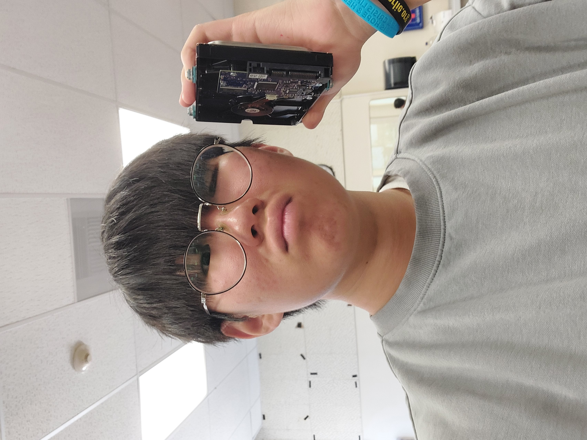
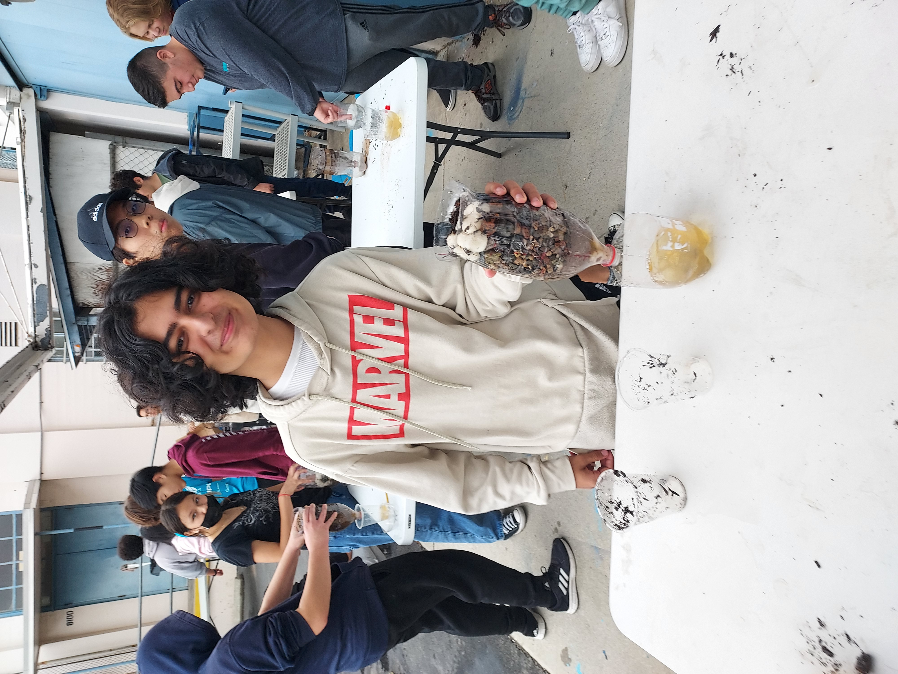
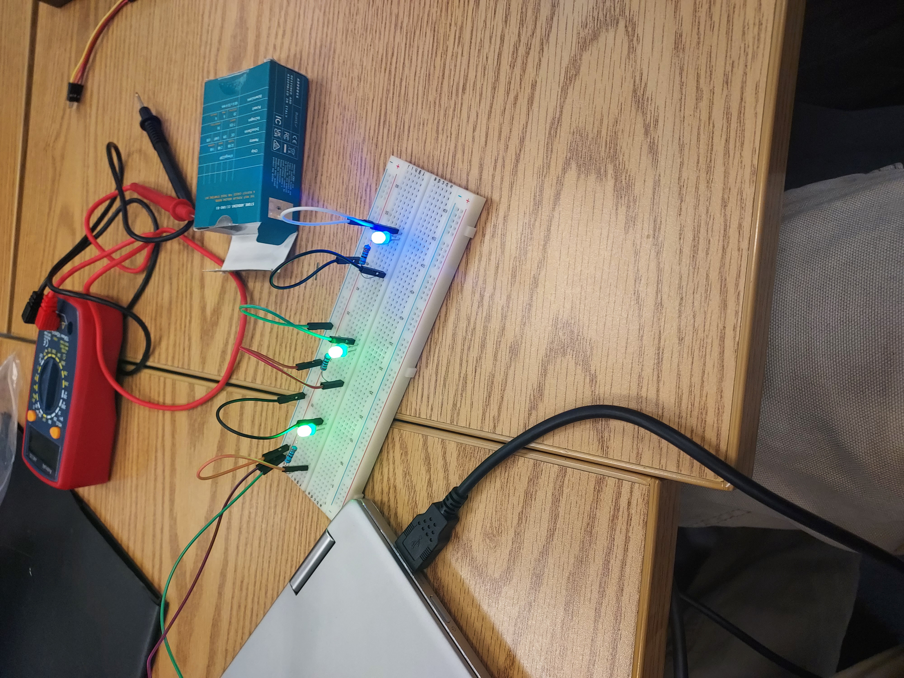
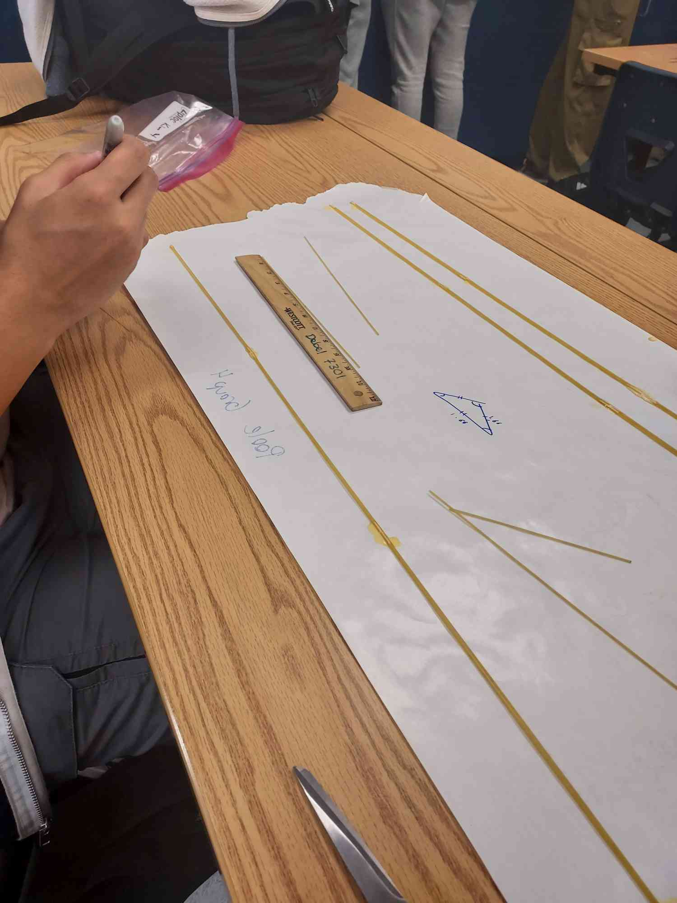
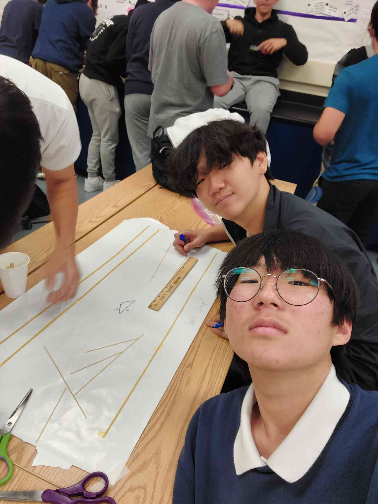
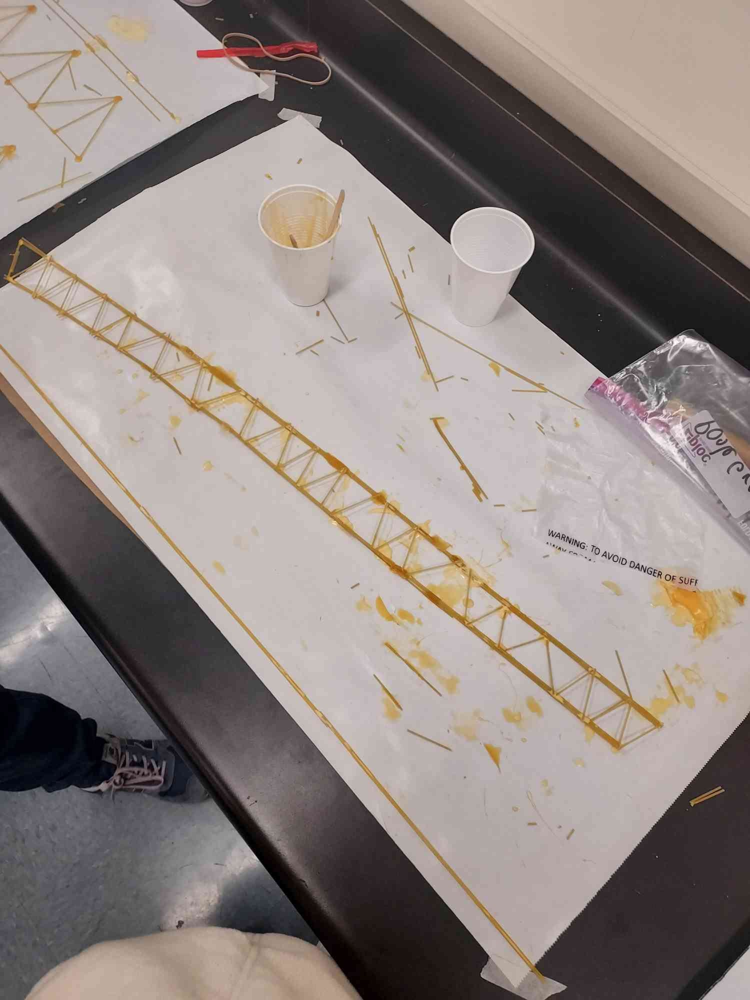
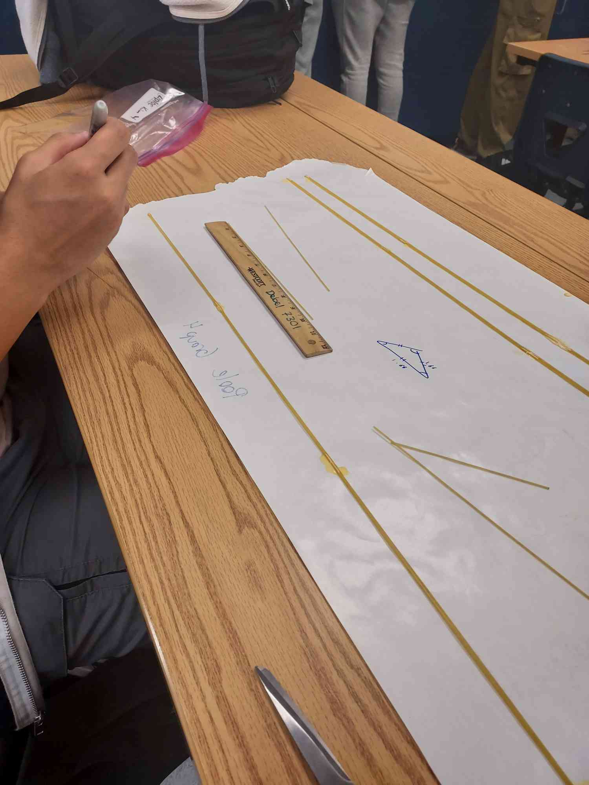
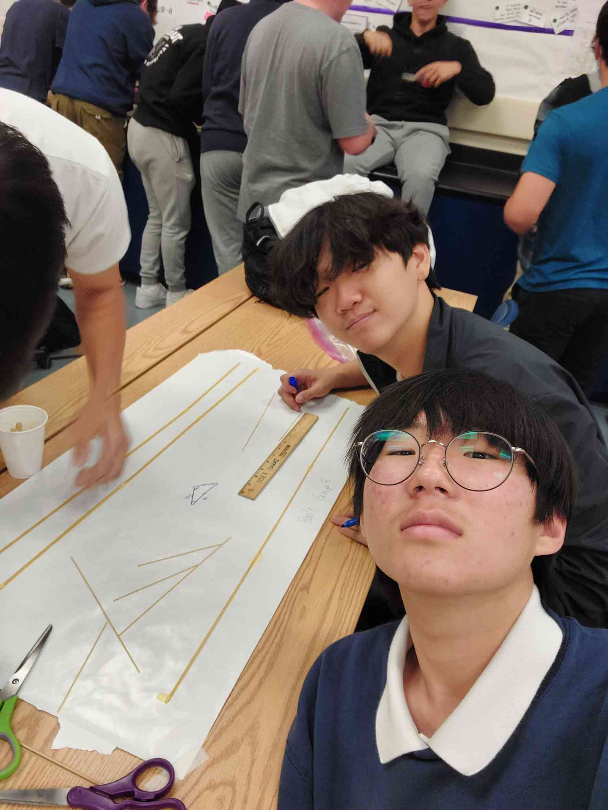
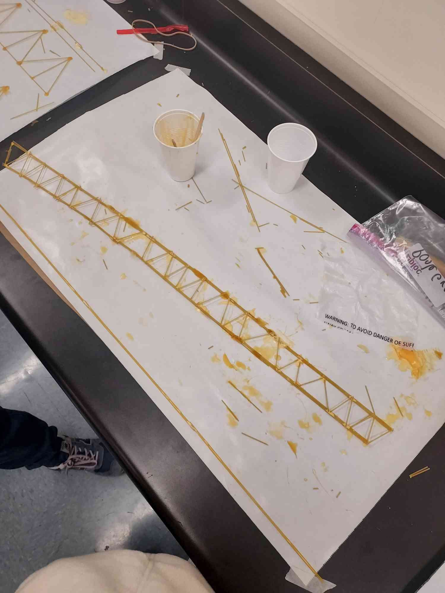

Semester2
Semester2
Semester2
Semester2
8/20/23 - This is my first journal entry!
candy recipe
8/21/23 - This is my second journal entry
8/25/23 - I learned about the engineering process as well as safety. For the website, I learned how to add an image to the website, make the heading move using the marquee function, change the background color, and to push to github. We also did a challenge involving pvc pipes and marbles. The goal was to collaborate with teammates to transfer the marble using the pvc pipes and transferring the pipes from one person to another like a chain. We didn't do well in the challenge but we were close. This weekend I'm going to hang out with friends and do homework.
9/1/23 - I learned about the basics of mechanical engineering such as what mechanical engineering entails (Math, Kinematics Thermodynamics and Heat trasfer, material science, structural analysis, etc.) and simple machines (screws, wedges, pulleys, levers, inclines planes, wheel & axles). For this week's challenge, we used TinkerCAD to design various household appliances. The winner got a large kitkat and my friend, Justin Wong, won by designing a PS5. He shared the kitkat with me. I designed a toaster by grabbing a cube, stretching it, and adding holes. This week we designed a rube goldberg machine using simple machines, and we drew out an idea.

9/8/23 - My week was busy but it was alright overral. This week in engineering I learned about the history of mechanical engineering (such as how it is the oldest form of engineering) as well as what it entails (such as its sub-elements) and why its steps are important. This week was mostly spent CADing out our simple machine RUbe Goldberg machine with Justing Wong and Jacob Yang. Our RUbe Goldberg machine has 5 simple machines: A screw that leads into a pulley that pulls up a car (wheel and axle), which then rolls down an inclined plane, crashes into a lever and a needle then pops the balloon. I believe the most challenging part will be constructing the screw and constructing the contrapment that will pull down the door which secures the car so that it may roll down the inclined plane.

9/18/23 - This week we worked on our rube goldberg machine physically with cardboard, duct tape, and string. The only other material we used was a baseball given by Mr. Poole. Our original cad design had a screw, inclined plane, pulley, wheel and axle, and a lever. However, our pulley did not work so we ended up not using the car (wheel and axle) as well as the pulley. Thus, our rube goldberg machine consisted of a screw, incline plane, and a lever. Our rube goldberg machine was tested on Friday and it ended up popping the balloon successfully. However, if given more time, we would have added a pulley and a car. We all worked well together (though Justin did a lot of the heavylifting), with Jacob working on the structure and unsuccessful pulley, and me mainly cutting cardboard for structure/walls, cutting tape, and working on the unsuccessful pulley.


9/22/23 - This week I was absent for the E project but present for the floatation project. I learned about teamwork and surface tension from the floatation device challenge. I also learned a lot about computer engineering, a field that I am sort of interested in. I learned about the many subsytems of computer engineering such as embedded systems, computer vison, quantum computing, integrated circuits, and computer architechture. I also learned about Moore's law (states that the number of transistors in a given area has to double every 2 years), data as a unit, and computer engineering related organizations such as IEEE, ACM, and CRA.
9/28/23 - This week I learned about the different parts of a computer by dissecting both a computer and a laptop. I am interested in learning more about quantum engineering and what makes up the parts of a pc in computer architechture. This week we dissected a pc and a laptop, which allowed us to learn how each part interacts with each other as well as their placement on the motherboard. This weekend I am going to work on homework and study for my upcoming SAT. I will then play Rainbow Six Siege, Overwatch 2, Monster Hunter Rise, or something else with my friends.



10/6/23 - This week I learned about bioengineering, a field that combines biology and engineering. We also learned about the subsystems (mechanical engineering, electrical engineering, physics, mathematics and statistics, etc.) and different fields of bioengineering such as bioinformatics, biomechanics, biomaterial, tissue/genetic engineering, and medical devices. We also learned about biomimicry, where we implement nature into our own technology. This can be seen with spiderwebs since they have the highest tensile strength for its size and gecko claws which we implemented into the mars rover. My partner and I also made a hand but we tried to make 2. However, the 2nd one ended up being a dud. We implemented a singular string that was used to clasp the waterball. In th future, we would hopefully make it more portable and usable with out something to pull the string. This weekend I'm taking my SAT and I am planning on possibly going to hoco. On sunday I'm going to Oktoberfest with a friend and if I don't go to hoco, I'm going to hang out with a friend.


10/13/23 - This week I learned about Aerospace engineering. Aerospace engineering is a branch of engineering specializing in the design, manufacturing, and science of both aircrafts and rocket ships. Aerospace engineering also entails missles and more. Areas of focus for aerospace engineering are structural design, navigation & control, guidance, and instrumentation. There are aeronautical engineers (planes and such) and astronautical engineers (space shuttles and more). The 4 forces of a flying object are thrust, lift, drag, and weight. Thrust is applied force, lift is applied force upwards, and drag is friction and air resistance, aand weight is gravity. I love the hands-on aspect of the class but if there was one thing I wished for in the class, it would be being able to work more speicifically on a field of engineering I am interested in like specializing and going depth in computer engineering and such.
Bottle Rocket BOM
10/20/23 - This week I learned about Aerospace engineering. Aerospace engineering is a branch of engineering specializing in the design, manufacturing, and science of both aircrafts and rocket ships. Aerospace engineering also entails missles and more. Areas of focus for aerospace engineering are structural design, navigation & control, guidance, and instrumentation. There are aeronautical engineers (planes and such) and astronautical engineers (space shuttles and more). Our bottle rocket had a cone for the tip of the rocket, 1 small fin at the top, 2 large wings to help gluide, and a pencil for the rail Mr. Poole had added. We used 40 PSI, around 25% of the bottle filled, and launched it at a 45 degree angle. However, our rocket ended up going wild and moved in the opposite direction of where it was supposed to go. In the end it was pretty fun though and Mr. Poole got mad soaked.
10/26/23 - This week I learned about environmental engineering which aims to provide humans with clean, healthy, water, air, and land. Environmental engineering cleans wastewater, toxic pollutants, and tries to fight global warming aka climate change aka greenhouse gases. We also made a water filter this week using a 2L bottle, cotton balls, dirt, pebbles, and rocks. Our water filter successfully removed large pieces of dirt from the water but it did a less than stellar job at removiing the smaller particles. This left our water with a yellow tinge. This weekend I'm excited to go to fright fest tonight, 10/26. Six flags is my favorite amusement park and it is my first ever fright fest. I am going with a friend, his gf, and his family. On Friday I'm grinding out some work with a friend and on Saturday I'm going to go thrifting which I am really exctied about cuz i need that drippppppppppp fr. Ong i be lacking in the drippy fitskies department lately. I'm also going to my first ever actual party on saturday hosted by a friend which I'm excited about.

10/31/23 -
11/9/23 - These 2 weeks I learned about electrical engineering. I think this field is the most confusing to me but also one of the most interesting. I find it interesting how electricity has so many unique properties that can be manipulated in any way for people to use. I learned how electricity and circuits worked (volts, currents, resistance, how it travels in a circle and need to be grounded, etc.). I also learned how to create circuits on tinkerCAD and we created 2 circuits using this method (one parallel and one series) as well as how lightning strikes can leave survivors because it is high voltage and now current. We also started making circuits using LEDs, arduino, wires, and resistors. We also manipuated a LED using arduino code, wires, and resistors. We also measured the values of volts, ohms, and amperes using a multimeter.



 




